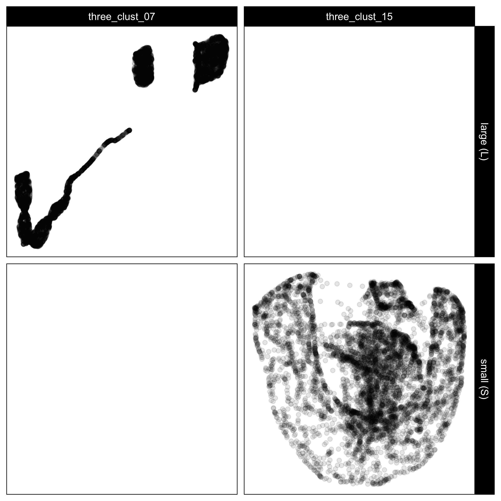
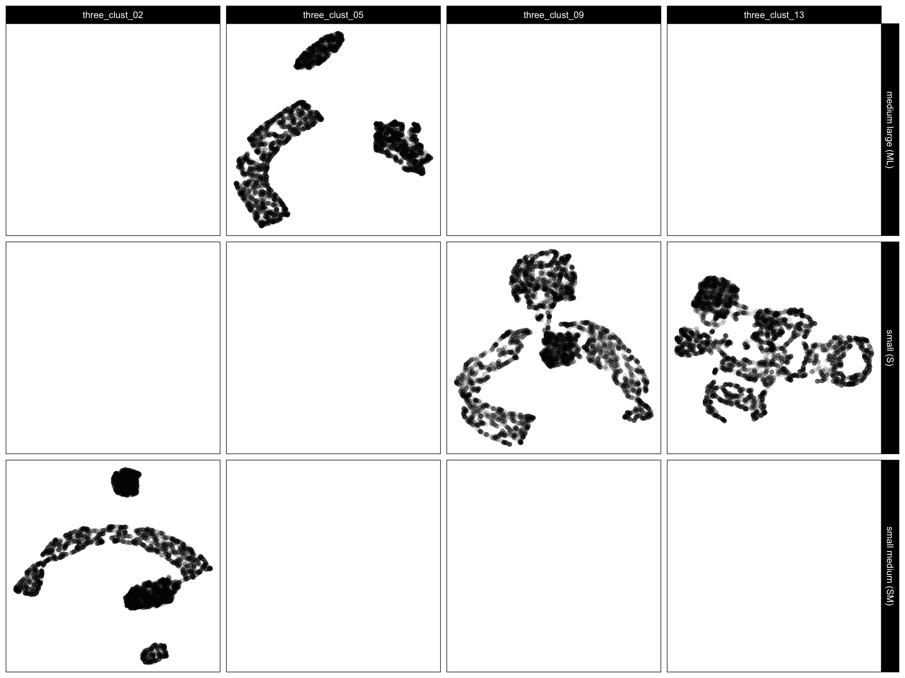
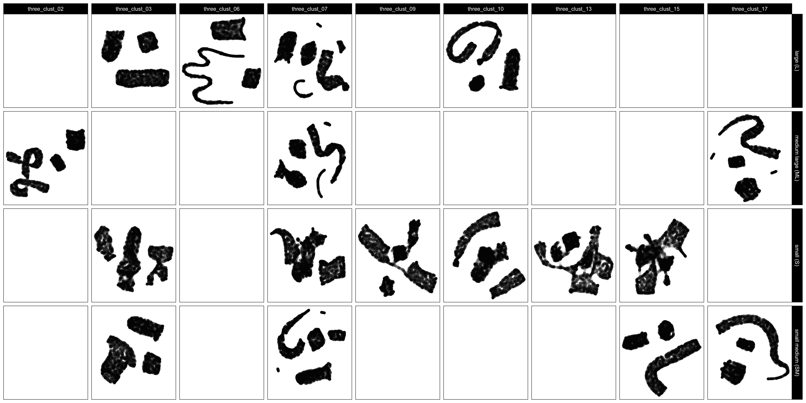
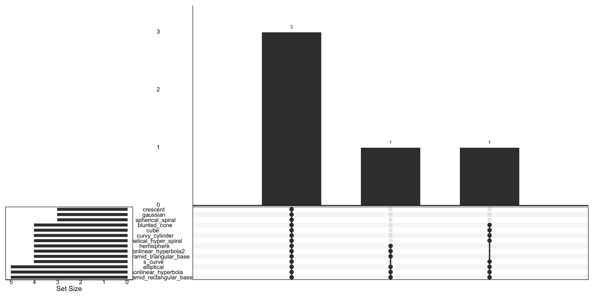
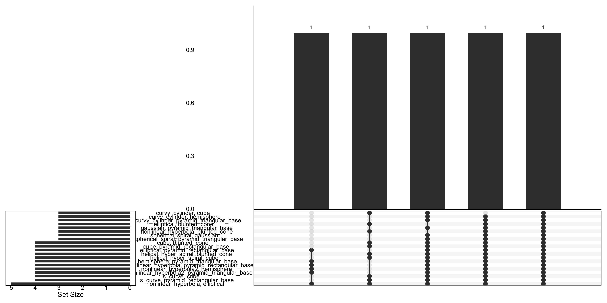
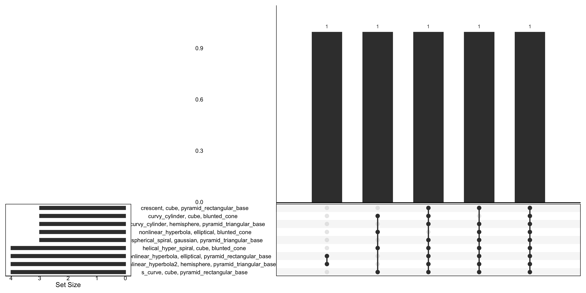

5 Perception and Misperception in Nonlinear Dimension Reduction: A User Study
5.1 Introduction
Non-linear dimension reduction (NLDR) is popular for making a suitable representation of high-dimensional () data by applying non-linear transformations. Recently developed methods include t-distributed stochastic neighbor embedding (tSNE) (Maaten and Hinton 2008), uniform manifold approximation and projection (UMAP) (McInnes et al. 2018), potential of heat-diffusion for affinity-based trajectory embedding (PHATE) algorithm (Moon et al. 2019), large-scale dimensionality reduction Using triplets (TriMAP) (Amid and Warmuth 2022), and pairwise controlled manifold approximation (PaCMAP) (Wang et al. 2021). However, in different data structures, the representation generated can vary dramatically from what is observed in (Figure 5.1).
The dilemma for the analyst is then understanding why viewers misidentify the data displayed in the NLDR layout and high-dimensional view when the inter-cluster distance vary. The research described here provides evidence through a cognitive perception experiment.
The paper is organized as follows. Section 5.2 provides a summary of the literature on NLDR, high-dimensional data, and visualization methods. Section 5.3 describes the experiment designed to examine people’s perception to assess how viewers recognize structure differently from the NLDR layout and the tour view. Section 5.4 discusses the collected data and results. Limitations are provided in Section 5.5. A discussion of the presented work, and ideas for future directions are described in Chapter 7.
5.2 Background
Historically, representations of data have been obtained through techniques based on multidimensional scaling (MDS) (Kruskal 1964), including principal component analysis (PCA) (for an overview see Jolliffe (2011)). These methods aim to construct a layout that preserves pairwise distances between observations in the original space by minimizing a stress function. Variants such as non-metric scaling (Saeed et al. 2018) and isomap (Silva and Tenenbaum 2002) extend this approach to capture nonlinear relationships. Challenges inherent to high-dimensional data visualization—such as distance concentration and interpretability—are well recognized (Johnstone and Titterington 2009).
Several NLDR methods have since become popular for generating representations that aim to preserve either local or global structures of data. Examples include tSNE, UMAP, PHATE, TriMAP, and PaCMAP. Each method uses different underlying principles—for example, tSNE and PHATE emphasize local relationships, while TriMAP and PaCMAP are designed to better capture global structure. As a result, these methods can produce very different layouts of the same data, potentially leading to misinterpretation of structures such as cluster separation.
An alternative to NLDR for visualizing data is to use linear projections. PCA is the classical approach, producing new variables as linear combinations of the original dimensions. While PCA provides a single static projection that maximizes variance, tours—introduced by Asimov (1985)—extend this idea by generating smooth sequences of linear projections, effectively creating a movie of the data viewed from multiple directions. Tours can reveal structure that may be hidden in any single projection by continuously changing the viewing angle through high-dimensional space. Many tour algorithms have since been developed and are implemented in the R package tourr (Wickham et al. 2011), with interactive variants available in langevitour (Harrison 2023) and detourr (Hart and Wang 2022). Tours are valuable because they preserve the true linear geometry of the data—unlike NLDR methods, they do not warp distances or angles. This makes them faithful but sometimes visually cluttered representations: global structure can obscure local detail, and the phenomenon of piling (Laa et al. 2022)—where high-dimensional points project toward the center—can make clusters harder to distinguish.
To assess how well NLDR methods preserve structures such as cluster separation, it is important to quantify inter-cluster distances. A variety of distance-based metrics have been proposed in the clustering and visualization literature (tadeusz1974?; peter1987?; david1979?), including minimum, maximum, and average distances between clusters, centroid distances, and ratios that combine between- and within-cluster variation. In this study, we focus on two complementary measures: the between-to-within (BW) ratio, which captures global separability, and the minimum distance between clusters, which reflects the closest approach of any two clusters. Together, these provide interpretable summaries of both overall and local cluster separation while accounting for within-cluster variability.
The objective of this research is to conduct a cognitive perception experiment that examines how participants recognize and interpret structure differently when viewing a two-dimensional NLDR layout and a tour, generated with langevitour. We investigate how perceived structure changes as true cluster separation (as measured by BW ratio and minimum distance) increases, and how this perception differs across methods. These findings will help identify common misperceptions that can arise when analysts rely solely on NLDR layouts, and will inform better practice in interpreting and reporting structures seen in such visualizations.
5.3 Method
What is a NLDR plot?
The representation of the high-dimensional data constructed to preserve as much information, like clustering and non-linear relationships, as possible. There are various commonly used techniques for creating this representation, including tSNE, and UMAP. These methods aim to identify a low-dimensional structure that captures the most important patterns or relationships in the data, allowing for visualization and easier interpretation. However, it is important to note that embeddings can lose some information from the high-dimensional data, as they necessarily involve a loss of dimensionality.
What is a tour?
The tour shows a sequence of two-dimensional linear projections of the high-dimensional data. It is similar to looking at shadows of a 3\text{-}D object, and trying to infer the shape of the 3\text{-}D object. Looking at linear projections of high-dimensional data is like looking at the shadows, and one hopes to gain a sense of what shapes exist in the data. For example, if the data separates into clusters in any of the projections, it means that there are clusters in the data in the high dimensions. If the data shows a non-linear or curvilinear shape it means that there are non-linear associations between some variables. If the data collapses to roughly a line it means that it lives in a lower dimensional space than the number of high dimensions. If the points moving differently from others, there are outliers or unusual observations in the high dimensions.
What is being tested?
We are generally interested in testing whether “The two plots displays the same data” (H_0) against the broad alternative “The two plots do not display the same data” (H_a).
Testing this broad null hypothesis (H_0) is practically challenging due to the variety of data structures involved. It can be both time-consuming and computationally intensive. Therefore, we focused on one data structure that is particularly useful for investigation: three clusters where two clusters are close together, while one is more distant. Three clusters have different shapes and each cluster contain different number of points. The sample size is 7500.
Our hypothesis is as follows:
H_{0m1}: The distance between the clusters has no effect on the probability of correctly identifying the NLDR plot generated by NLDR method m and the tour from the same data. Vs H_{1m1}: The distance between the clusters does have an effect on the probability of correctly identifying the NLDR plot generated by NLDR method m and the tour from the same data.
This study aims to answer which NLDR methods are more accurate in identifying the same data structure in the NLDR plot and the tour, as the distance increases, and to identify which types of data structure components are more prone to misidentification across methods.
Data generation
For non-attention check attempts, 28 data structures are generated, while only two data structures are generated for attention check attempts. Before being presented to participants, the data is scaled.
Non-attention check data
For the experiment, three cluster data are generated. The three clusters contain different number of points and shapes. Let C_1, C_2, and C_3 denote the centroids of three clusters. The pairwise distances between these centroids are calculated as: d(C_1, C_2) = c_{12} \approx 2.17, \quad d(C_1, C_3) = c_{13} \approx 4, \quad d(C_2, C_3) \approx c_{23} = 3.6. These results indicate that clusters C_1 and C_2 are in close proximity, whereas cluster C_3 is positioned further away from the other two clusters, suggesting a spatial separation within the data. The reason for using the distance between centroids is that it can be easily controlled.
In total, there are 28 data structures used for the experiment. Out of these, 18 data structures show the same structure in both the NLDR plot and tour for each experiment, while the remaining 10 data structures display different structures in the NLDR plot and tour. This means that when data structure 19 is displayed in the NLDR plot, data structure 20 appears in the tour.
To systematically vary the degree of separation in the SAME trials, the original (medium large) centroid distances are scaled by four different factors: 0.1 (small), 0.6 (small medium), 0.9 (medium), and 1.1 (large). In contrast, data structures used for the DIFFERENT trials retained the original (medium-large) centroid distances.
Attention check data
There are two sets of attention check data; one consisting of three Gaussian clusters and the other consisting of four Gaussian clusters. Each cluster is generated using a multivariate normal distribution where the mean vectors and variances were predefined. Specifically, for the three-cluster case, the mean vectors were set as [1, 0, 0, 0], [0, 1, 0, 0], and [0, 0, 1, 1], with a common variance of 0.1 for all clusters. For the four-cluster case, the mean vectors were defined as [1, 0, 0, 1], [0, 1, 1, 0], [1, 0, 1, 0], and [0, 1, 0, 1], also using a variance of 0.1. This approach ensures that data points are normally distributed around the specified centroids, with the spread controlled by the variance parameter. Each Gaussian cluster dataset consists of data with a sample size of 7500, and each cluster contains an equal number of data points.
Experiment design
The visual layout of the experiment for one participant is shown in Figure 5.2. Each participant completed 20 trials: 15 SAME trials, in which the same data structure was shown in both the NLDR plot and the tour; 4 DIFFERENT trials, showing DIFFERENT data structures; and one attention check trial that could be either SAME or DIFFERENT. For the SAME, five NLDR methods (tSNE, UMAP, PHATE, PaCMAP, and TriMAP) were each paired with three of five distance scale factors (small, small medium, medium, medium large, and large), giving 15 balanced combinations. In the DIFFERENT, four NLDR methods were randomly selected, with the remaining method assigned to the attention check trial. All DIFFERENT and attention check trials used a distance scale factor of medium large.

Treatments
Two primary treatments were considered in the experiment: the NLDR method and the distance scale factor.
The first treatment consisted of five NLDR methods: tSNE, UMAP, PHATE, PaCMAP, and TriMAP each producing a representation.
The second treatment, the distance scale factor, controlled the degree of cluster separation in the high-dimensional space. Five categorical levels: small, small–medium, medium, medium–large, and large were defined to represent increasing degrees of separability. This categorical design enhances interpretability and perceptual distinctness, allowing participants to discern meaningful structural differences while maintaining robustness against minor data variations.
Cluster separability was quantified using two complementary measures: the between-to-within (BW) ratio and the minimum inter-cluster distance. A higher value of either metric indicates greater separation among clusters (Figure 5.3).
The BW ratio, defined as
\text{BW Ratio} = \frac{B}{W} = \frac{ \sum_{i=1}^{3} n_i \cdot \|\bar{\mathbf{x}}_i - \bar{\mathbf{x}}\|^2 }{ \sum_{i=1}^{3} \sum_{\mathbf{x}_j \in C_i} \|\mathbf{x}_j - \bar{\mathbf{x}}_i\|^2 }.
where (B) and (W) denote between- and within-cluster dispersion, respectively; \bar{\mathbf{x}}_i is the centroid of cluster C_i; \bar{\mathbf{x}} is the overall centroid; and n_i is the number of observations in cluster C_i.
In addition, the minimum distance was used as a complementary measure of global separation:
\text{minimum distance} = \min_{k \neq \ell} \min_{x \in C_k, , y \in C_\ell} d(x, y),
which captures the closest proximity between any two clusters.

Participant recruitment
Participants were recruited from the Prolific crowd-sourcing platform (palan2018?). The study expects that the participants are uninvolved judges with no prior knowledge of the data to avoid inadvertently affecting results. Pre-screening procedures were applied the recruitment: potential participants needed with fluent in English and have completed at least 10 Prolific studies with a 98% approval rate.
Data collection
The survey web application, Match-a-roo was used for data collection. Participants provided introduction and instructions for the survey. Before start the survey, the participants can lead to the “example” page which allow them to experiment with the data collection interface and practice deciding whether the two displays shown the same data or not. The main purpose of using the “example” was merely intended to familiarize the participants with the questions which would be asked as well as the process of deciding whether the two displays shown the same data or not. The interface did not provide any numeric feedback as to participant correctness.
The participants were asked to provide their Prolific ID and their consent to the responses being used for analysis. After giving consent, the participant can start the trials. Two visual displays of data were shown where the data may be the SAME or DIFFERENT. One of the visual displays is a NLDR plot, and the other is a tour. The participants were asked to decide whether that data was the same in both displays and to report their confidence about their choice and any comments about the answer.
After completing 20 evaluations, they were asked for their demographics which included preferred pronoun, the highest level of education achieved, their age category, whether they used principal component analysis in their work, and whether they applied NLDR techniques such as tSNE and UMAP.
5.4 Results
The data was collected from 127 participants, resulting in 127 \times 15 = 1905 evaluations, excluding the attention check trials and the trials shows the different data in two displays.
Generalized Linear Mixed-Effects Models
Two generalized linear mixed effects models (mcculloch2001?) were fitted to model the likelihood of detecting the data structure in both the NLDR plot and the tour. Both models accounted for participant-level variability and the effect of distance measures under different NLDR methods. The general form of the model is given by:
\text{logit}(P(y_{ijm} = 1)) = \mu_{m} + \beta_{m} d_{i} + \gamma_{j} \tag{5.1}
where \mu_{m} is the overall mean for NLDR method m, d_i is the distance measure for the data structure i = 1, \dots, 18, \beta_m is the fixed effect of BW ratio under NLDR method m, \gamma_j is the random effect of the participant j = 1, 2, \dots, 127, where \gamma_j \sim N(0, \sigma_\gamma^2). Separate models were fitted using d_i as either the BW ratio or the minimum distance. The NLDR methods denoted by m can include TriMAP, UMAP, PaCMAP, tSNE, and PHATE.
Correct proportions
The proportion of correct identifications across the different NLDR methods and distance measures was examined to assess how effectively each method preserves cluster separation. Two generalized linear mixed-effects models were fitted using either the scaled BW ratio (Figure 5.4, Table 5.1) or the exp(scaled minimum distance) (Figure 5.5, Table 5.2) as predictors. Both models included participant-level random effects to account for within-subject variability and NLDR method as a fixed factor interacting with the distance measure.
Results from the model using the scaled BW ratio (Table 5.1) indicate that cluster separability positively influences correct identification for most methods. As shown in Figure 5.4, UMAP and PaCMAP demonstrate increased accuracy as the scaled BW ratio increases, suggesting that these methods more effectively capture distinct cluster boundaries. tSNE and PHATE show declining accuracy with larger BW ratios, implying potential over-separation or distortion of cluster geometry at higher distances. TriMAP maintains stable performance across the range of separations, indicating robustness to moderate variations in between-cluster distance.
***’, \emph{p}\leq 0.01 ‘**’, \emph{p}\leq 0.05 ‘*’, \emph{p}\leq 0.1 ‘.’).

Similarly, the model using exp(scaled minimum distance) (Table 5.2) confirms these trends (Figure 5.5). Higher values of exp(scaled minimum distance), representing greater spatial separation between clusters, are associated with improved correctness for UMAP and PaCMAP. In contrast, tSNE and PHATE again show a negative association with increasing separation, while TriMAP exhibits consistent performance. These patterns suggest that the relative cluster separability—whether quantified by BW ratio or minimum distance—plays a crucial role in how well NLDR methods reveal the underlying structure.
***’, \emph{p}\leq 0.01 ‘**’, \emph{p}\leq 0.05 ‘*’, \emph{p}\leq 0.1 ‘.’).

Together, these results highlight that UMAP and PaCMAP are more sensitive to improvements in cluster separation, achieving higher correct proportions as inter-cluster distances increase. Conversely, tSNE and PHATE may lose fidelity in scenarios with very distinct clusters, potentially due to their optimization dynamics. TriMAP’s consistent accuracy across distance scales reinforces its stability and balanced preservation of local and global structure.
Reasons for mis-identification by method
Understanding why participants misidentified certain data structures provides deeper insight into the perceptual consequences of each NLDR method’s underlying optimization principles. Each method uses a different objective function to balance local and global structure preservation, which can influence how faithfully high-dimensional relationships are represented in . To explore these differences, we analyzed misidentifications across methods, identifying where and how each algorithm tended to distort or merge clusters. This analysis highlights systematic weaknesses linked to each method’s design, helping explain why some embeddings were more difficult for participants to interpret correctly.
TriMAP
TriMAP minimizes a triplet-based loss function that seeks to preserve relative distances among triplets of points in (Amid and Warmuth (2022)). This design emphasizes maintaining global relationships between clusters but can underrepresent local curvature and fine-scale geometry, particularly when clusters differ in density or shape.
Figure 5.6 illustrates the two three-cluster data structures that were most frequently misidentified when visualized using TriMAP: nonlinear_hyperbola2–hemisphere–pyramid_triangular_base (three_clust_07) and nonlinear_hyperbola–elliptical–pyramid_rectangular_base (three_clust_15). In both cases, the underlying cluster separation evident in was not well preserved in the NLDR layout.
Across these examples, TriMAP tends to merge neighboring clusters or distort curved manifolds, leading to overlaps between nonlinear and compact components such as elliptical or pyramid-shaped clusters. The algorithm’s emphasis on maintaining global relationships can inadvertently compress local structure, particularly when manifolds differ in curvature or density.
This projection bias results in flattened or partially merged representations, where the curved components (e.g., nonlinear_hyperbola) lose their geometric integrity. Consequently, TriMAP’s performance declines when the data structure involves a combination of curvilinear and planar clusters, revealing its sensitivity to differences in shape complexity and scale.

UMAP
UMAP optimizes a cross-entropy loss between high- and low-dimensional fuzzy simplicial sets (McInnes et al. (2018)). Its hyper-parameters—n_neighbors and min_dist—govern the trade-off between local and global structure.
Figure 5.7 presents the three-cluster data structures that were misidentified by UMAP. The corresponding true high-dimensional structures are s_curve–cube–pyramid_rectangular_base (three_clust_02), nonlinear_hyperbola–elliptical–blunted_cone (three_clust_05), helical_hyper_spiral–cube–blunted_cone (three_clust_09), and curvy_cylinder–cube–blunted_cone (three_clust_13).
UMAP demonstrates partial success in separating clusters but exhibits notable distortions in geometric structure and merging of neighboring clusters in several cases. For instance, in three_clust_02 and three_clust_09, curved manifolds (s_curve and helical_hyper_spiral) are projected into compact or fragmented regions, reducing the apparent curvature and continuity of the original structure. In three_clust_05 and three_clust_13, UMAP tends to merge blunted_cone and elliptical or cube clusters, suggesting difficulty in maintaining separation between clusters of different densities or similar central positions in the high-dimensional space.
These results indicate that while UMAP is generally effective at maintaining local neighborhood relationships, it can fail to preserve global geometry when clusters differ in shape or scale. The observed misidentifications likely arise from its default parameterization, where a small min_dist and moderate n_neighbors emphasize local compactness at the expense of broader structural fidelity.

PaCMAP
PaCMAP uses a multi-term objective combining near, mid-range, and further pair constraints (Wang et al. (2021)), designed to improve global structure compared to tSNE and UMAP.
Figure 5.8 displays the data structures for which PaCMAP produced notable misidentifications in the embedding. The true high-dimensional configurations for these datasets include s_curve–cube–pyramid_rectangular_base (three_clust_02), curvy_cylinder–hemisphere–pyramid_triangular_base (three_clust_03), crescent–cube–pyramid_rectangular_base (three_clust_06), nonlinear_hyperbola2–hemisphere–pyramid_triangular_base (three_clust_07), helical_hyper_spiral–cube–blunted_cone (three_clust_09), spherical_spiral–gaussian–pyramid_triangular_base (three_clust_10), curvy_cylinder–cube–blunted_cone (three_clust_13), nonlinear_hyperbola–elliptical–pyramid_rectangular_base (three_clust_15), and nonlinear_hyperbola2–cube–blunted_cone (three_clust_17).
Across these examples, PaCMAP tends to preserve local density structure within clusters effectively but often struggles with global positioning and relative orientation among clusters. For example, in three_clust_02, the s_curve and cube clusters remain relatively well-formed but are positioned too close to the pyramid_rectangular_base cluster, creating apparent overlaps. Similarly, in three_clust_06 and three_clust_07, the pyramid-shaped clusters are fragmented into smaller subgroups, suggesting instability in maintaining global manifold continuity.
A consistent observation is that PaCMAP compresses or folds curved or elongated manifolds, such as s_curve, helical_hyper_spiral, and nonlinear_hyperbola2, into smaller regions of the space. This distortion likely arises from the algorithm’s use of both near and mid-range neighbor preservation terms, which balance local and global structure but can underrepresent nonlinear curvature when clusters vary in geometric complexity or density.
Overall, these results indicate that PaCMAP achieves visually clean separation for simpler or isotropic clusters but tends to overcompress nonlinearly extended clusters and misplace asymmetric shapes, resulting in inaccurate global relationships between clusters.

tSNE
tSNE minimizes the Kullback–Leibler (KL) divergence between pairwise similarities in high and low dimensions (Maaten and Hinton (2008)). This objective strongly prioritizes local neighborhood preservation while ignoring global distances.
Figure 5.9 illustrates the data structures where tSNE produced misidentifications or distortions in the embedding. The affected datasets include s_curve–cube–pyramid_rectangular_base (three_clust_02), curvy_cylinder–hemisphere–pyramid_triangular_base (three_clust_03), curv2–gaussian–filled_hexagonal_pyramid (three_clust_04), nonlinear_hyperbola–elliptical–blunted_cone (three_clust_05), crescent–cube–pyramid_rectangular_base (three_clust_06), nonlinear_hyperbola2–hemisphere–pyramid_triangular_base (three_clust_07), conic_spiral–gaussian–filled_hexagonal_pyramid (three_clust_08), helical_hyper_spiral–cube–blunted_cone (three_clust_09), spherical_spiral–gaussian–pyramid_triangular_base (three_clust_10), s_curve–hemisphere–filled_hexagonal_pyramid (three_clust_12), curv2–gaussian–pyramid_triangular_base (three_clust_14), nonlinear_hyperbola–elliptical–pyramid_rectangular_base (three_clust_15), crescent–hemisphere–filled_hexagonal_pyramid (three_clust_16), nonlinear_hyperbola2–cube–blunted_cone (three_clust_17), and conic_spiral–gaussian–pyramid_triangular_base (three_clust_18).
Across these examples, tSNE successfully captures local structure within clusters—preserving compactness and density—but often fails to represent the global arrangement among multiple clusters. In several cases, tSNE artificially amplifies distances between geometrically related clusters (e.g., s_curve and cube in three_clust_02) or splits continuous manifolds such as nonlinear_hyperbola and helical_hyper_spiral into disjoint fragments. This fragmentation suggests that tSNE’s heavy emphasis on preserving local neighborhoods comes at the cost of losing the true topological continuity of non-linear shapes.
A recurring issue is that tSNE tends to over-separate clusters when they differ in density or curvature. For instance, in three_clust_06 and three_clust_07, one or more clusters (particularly those with curved or open structures) are pushed disproportionately far apart, producing an embedding that exaggerates separation. Additionally, tSNE appears sensitive to cluster anisotropy—for example, pyramid_triangular_base and filled_hexagonal_pyramid clusters often appear distorted or collapsed into compact forms, suggesting that their high-dimensional shape complexity is not faithfully maintained in the low-dimensional layout.
Overall, these misidentifications reveal that while tSNE produces visually distinct clusters with strong local cohesion, it frequently distorts global geometry, particularly when clusters vary in curvature, scale, or orientation.

PHATE
PHATE constructs a diffusion-based potential distance that encodes multi-scale manifold structure (Moon et al. (2019)). This approach excels at capturing continuous transitions, but tends to over-smooth boundaries between discrete clusters.
Figure 5.10 presents the high-dimensional data structures for which PHATE led to misidentification or structural distortion in the embedding. The affected datasets include curv–elliptical–blunted_cone (three_clust_01), s_curve–cube–pyramid_rectangular_base (three_clust_02), curvy_cylinder–hemisphere–pyramid_triangular_base (three_clust_03), curv2–gaussian–filled_hexagonal_pyramid (three_clust_04), nonlinear_hyperbola–elliptical–blunted_cone (three_clust_05), crescent–cube–pyramid_rectangular_base (three_clust_06), nonlinear_hyperbola2–hemisphere–pyramid_triangular_base (three_clust_07), conic_spiral–gaussian–filled_hexagonal_pyramid (three_clust_08), helical_hyper_spiral–cube–blunted_cone (three_clust_09), spherical_spiral–gaussian–pyramid_triangular_base (three_clust_10), curv–elliptical–pyramid_rectangular_base (three_clust_11), s_curve–hemisphere–filled_hexagonal_pyramid (three_clust_12), curvy_cylinder–cube–blunted_cone (three_clust_13), curv2–gaussian–pyramid_triangular_base (three_clust_14), nonlinear_hyperbola–elliptical–pyramid_rectangular_base (three_clust_15), crescent–hemisphere–filled_hexagonal_pyramid (three_clust_16), and conic_spiral–gaussian–pyramid_triangular_base (three_clust_18).
PHATE tends to preserve smooth manifold continuity across most clusters but exhibits misidentifications primarily when clusters differ in geometric curvature or density. For instance, in structures such as s_curve–cube–pyramid_rectangular_base (three_clust_02) and curvy_cylinder–hemisphere–pyramid_triangular_base (three_clust_03), PHATE partially merges distinct clusters along gradual transitions, reflecting its tendency to emphasize global manifold smoothness at the expense of discrete cluster separation. This blending effect is especially evident when clusters possess shared curvature characteristics, such as nonlinear_hyperbola and helical_hyper_spiral, or when the transition between shapes is continuous in high-dimensional space.
Another recurring pattern involves shape compression, where complex structures like filled_hexagonal_pyramid and pyramid_triangular_base are collapsed into more isotropic forms. This occurs because PHATE’s diffusion-based approach tends to over-smooth distances, leading to reduced contrast between dense and sparse regions. As a result, clusters with sharp edges or hollow geometries (e.g., pyramidal or conical shapes) lose their distinct form and may appear more circular in the embedding.
Overall, PHATE performs well in maintaining global topology and gradual transitions, making it suitable for continuous manifolds such as s_curve or crescent. However, it struggles to preserve clear separation among distinct, non-linear, or sharply bounded clusters, often blending or distorting them when the high-dimensional geometry involves abrupt curvature changes or contrasting densities.

Reasons for mis-identification by number of component(s)
Beyond method-specific effects, the complexity of the high-dimensional data itself also influenced recognition accuracy. Some misidentifications involved confusion between a single cluster and another, while others reflected blending or merging of multiple clusters. To investigate these patterns, we categorized misidentifications based on the number of cluster components involved—one, two, or three—and visualized their intersections across NLDR methods using UpSet plots. This analysis reveals how data complexity interacts with embedding behavior, shedding light on whether misidentification arises primarily from local distortions, partial overlaps, or global structural confusion.
One component
The first UpSet plot (Figure 5.11) shows the intersections of single-component misidentifications across methods. Each horizontal bar represents the number of times a particular data structure component was misidentified, and the vertical bars indicate combinations of NLDR methods that shared the same misidentifications.
The most frequently co-misidentified structures across methods included pyramid_rectangular_base, nonlinear_hyperbola, elliptical, s_curve, pyramid_triangular_base, nonlinear_hyperbola2, hemisphere, helical_hyper_spiral, curvy_cylinder, cube, blunted_cone, spherical_spiral, gaussian, and crescent.
These structures are geometrically curved, non-spherical, or multi-surface, making them prone to distortion in embeddings. For instance, nonlinear_hyperbola and s_curve contain pronounced curvature and variable density, which local-attraction methods like tSNE and PHATE often compress unevenly. Similarly, pyramid_rectangular_base and blunted_cone exhibit mixed sharp and smooth edges, challenging methods that rely on uniform neighborhood scaling.
Across methods, the greatest overlap occurred among PaCMAP, PHATE, tSNE, and UMAP, all of which misidentified at least four of these structures. TriMAP exhibited relatively fewer single-component errors, reflecting its stronger preservation of global relationships.

Two component
The second UpSet plot (Figure 5.12) summarizes cases where two components within a dataset were jointly misidentified. These represent situations where NLDR methods distorted the spatial relationships between two distinct geometric structures, leading to overlap or merging in space.
Commonly misidentified component pairs included nonlinear_hyperbola + elliptical, s_curve + pyramid_rectangular_base, s_curve + cube, nonlinear_hyperbola2 + pyramid_triangular_base, nonlinear_hyperbola2 + hemisphere, helical_hyper_spiral + cube, helical_hyper_spiral + blunted_cone, elliptical + pyramid_rectangular_base, cube + blunted_cone, spherical_spiral + pyramid_triangular_base, spherical_spiral + gaussian, and curvy_cylinder + hemisphere.
The most frequent method overlaps occurred among PHATE and tSNE, which jointly misidentified 37 pairs of components. These methods emphasize local neighborhood continuity and diffusion, often at the expense of maintaining global separation—leading to merging between nearby clusters. In contrast, TriMAP and UMAP contributed to fewer pairwise misidentifications and tended to maintain more distinct boundaries between curved or irregular shapes.
Overall, datasets combining both curved and polyhedral structures (e.g., nonlinear_hyperbola + pyramid_rectangular_base) were particularly challenging, as the embedding needed to balance continuity and separation simultaneously.

Three component
The third UpSet plot (Figure 5.13) highlights cases where misidentifications occurred due to complex interactions among three components within a dataset. These represent the most difficult configurations, where multiple structural and density variations coexist.
Frequent co-misidentified triplets included s_curve + cube + pyramid_rectangular_base, nonlinear_hyperbola2 + hemisphere + pyramid_triangular_base, nonlinear_hyperbola + elliptical + pyramid_rectangular_base, helical_hyper_spiral + cube + blunted_cone, spherical_spiral + gaussian + pyramid_triangular_base, nonlinear_hyperbola + elliptical + blunted_cone, curvy_cylinder + hemisphere + pyramid_triangular_base, curvy_cylinder + cube + blunted_cone, and crescent + cube + pyramid_rectangular_base.
Most of these triplets involve at least one curved or spiral component combined with a polyhedral structure, which appears to amplify projection distortion. PHATE and tSNE were again the dominant contributors, followed by PaCMAP, while TriMAP rarely misidentified three-component mixtures. The frequent co-occurrence of such errors suggests that preserving relative scaling among non-linear surfaces and multi-faceted shapes remains a key limitation of locally focused NLDR methods.

5.5 Limitations
One of the main drawbacks of visual experiments is their reliance on human judgments. In this context, the effectiveness of identifying the NLDR plot and the tour from the same data can be dependent on the perceptual ability and visual skills of the individual. However, when the results from multiple individuals are combined, the overall quality and robustness of the outcome is considerably high.
It is important to remove HTML widget elements such as controls, interactivity, and plot elements such as axis labels and text that might introduce bias. We recommend using a crowd-sourcing service like Prolific (palan2018?) to access high-quality data, as it is a time- and cost-effective way.
In this study, we used a specific data structure consisting of three distinct clusters, each with unique shapes. Two of the clusters are in close proximity to one another, while the third cluster is located farther away. Each cluster varies in the number of points it contains. We selected this data structure because it is simple.
To keep the experiment fair and consistent across trials, we approximately fixed the distance between the clusters in each data structure. We also used five distance scale factors to gradually change how far apart the clusters were. While this controlled setup makes it easier to interpret the results, it does limit how well the findings apply to more complex data structures with uneven or irregular cluster arrangements.
5.6 Conclusions
This study provides empirical evidence that NLDR methods differ substantially in how well they preserve high-dimensional structures that are perceptually meaningful for classification and clustering. By combining a controlled simulation of three clusters with varying separation, shape, and size, and a human recognition experiment, we quantified how structural separability in the original space translates into correct identification of clusters in representations.
Our results reveal consistent differences among NLDR methods. UMAP and PaCMAP produced layouts where greater high-dimensional separation—quantified by both the scaled BW ratio and the exponential of the scaled minimum inter-cluster distance—led to higher probabilities of correct identification. These methods explicitly optimize for both local and global relationships: UMAP through fuzzy topological preservation and PaCMAP through adaptive pairwise constraints that balance local and mid-range distances. This dual emphasis likely explains their superior perceptual alignment with the true structure. TriMAP showed a similar but less pronounced trend, consistent with its triplet-based loss that prioritizes preservation of global relationships.
In contrast, tSNE exhibited a negative association between separability and correct identification, consistent with prior findings that its Kullback–Leibler divergence loss exaggerates local density differences at the expense of global geometry. As clusters became more distinct in the high-dimensional space, tSNE’s optimization fragmented global relationships, yielding visually appealing but structurally misleading layouts. PHATE, which emphasizes manifold continuity rather than discrete grouping through potential distances, showed no systematic relationship between separability and accuracy, aligning with its design focus on smooth transitions rather than cluster fidelity.
Visual inspection of misidentifications further supports these quantitative results. Curvilinear or non-linear manifolds—such as s_curve, helical_hyper_spiral, and nonlinear_hyperbola—were most often misrepresented, particularly when paired with compact clusters like cube or blunted_cone. Methods emphasizing local continuity, such as tSNE and PHATE, tended to merge or over-separate these curved structures, while PaCMAP and UMAP occasionally distorted their global positioning when cluster density or scale varied. TriMAP, though better at maintaining overall spatial relationships, frequently compressed curved manifolds against more compact forms, leading to overlap or shape loss. These systematic misidentifications underscore how each method’s underlying loss function—balancing local versus global preservation—directly shapes perceptual fidelity in the resulting embeddings.
Overall, these findings emphasize that NLDR methods should be evaluated not only by visual appearance but by their alignment between quantitative structure and perceptual interpretation. Methods like UMAP and PaCMAP appear to maintain interpretable geometric fidelity across varying levels of separation, while tSNE and PHATE prioritize alternative aspects of structure. The implication for statistical graphics is that perceptually faithful embeddings are not guaranteed by standard algorithmic performance metrics alone.
Future work should extend these analyses to a wider range of experimental conditions, including different noise levels, sample sizes, and dimensionalities, to test the robustness of perceptual fidelity across contexts. Comparing with linear methods such as PCA or supervised embeddings could also clarify whether the observed effects are unique to non-linear transformations or reflect broader perceptual tendencies in cluster interpretation. In addition, exploring alternative data structures—such as overlapping clusters, hierarchical manifolds, or continuous gradients—would help determine how general these perceptual biases are across more complex topologies. Integrating automated visual diagnostics, for example using computer-vision or deep-learning–based similarity metrics, could complement human judgment and provide objective measures of structure preservation. Finally, combining interactive visualization environments with eye-tracking or cognitive-load assessments could reveal how users process and trust NLDR layouts in real time. Such advances would not only improve the interpretability of dimensionality reduction methods but also support the development of human-centered evaluation frameworks that bridge statistical validity and perceptual understanding in high-dimensional data visualization.
5.7 Acknowledgments
A pilot study was conducted with sample subjects from the working group of the Department of Econometrics and Business Statistics, Monash University. This pilot study allowed us to estimate the study’s completion time and the effect size and fine-tune the application.
These R packages were used for the work: tidyverse (Wickham et al. (2019)), lme4 ((douglas2015?)), broom.mixed ((ben2024?)), ggbeeswarm ((erik2023?)), emmeans ((russell2025?)), patchwork (Pedersen (2024)), colorspace (Zeileis et al. (2020)), kableExtra (Zhu (2024)), conflicted (Wickham (2023)), UpSetR ((nils2019?)), Rtsne (Krijthe (2015)), umap (Konopka (2023)), phateR(Moon et al. (2019)), reticulate (Ushey et al. (2024)), langevitour (Harrison (2023)), gridExtra ((baptiste2017?)), shiny ((winston2024?)), shinydashboard ((winston2025?)), shinythemes ((winston2021?)), bslib ((carson2025?)), shinyjs ((dean2021?)), DT ((yihui2016?)), googledrive ((lucy2025?)), googleAuthR ((mark2024?)), googlesheets4 ((jennifer2025?)), shinyalert ((dean2024a?)), shinypop ((fanny2024?)), randomNames ((damian2024?)), shinyfullscreen ((etienne2021?)), shinyWidgets ((victor2025?)), hms ((kirill2025?)), shinythemes ((winston2021?)), and shinycssloaders ((dean2024b?)). These python packages were used for the work: trimap (Amid and Warmuth (2022)) and pacmap (Wang et al. (2021)).
5.8 Supplementary Materials
All the materials to reproduce the paper can be found at https://github.com/JayaniLakshika/paper-vis-experiment.
Appendix: The appendix includes more details about the data structures and their tSNE, UMAP, PHATE, PaCMAP, and TriMAP layouts used in the study (appendix.pdf, Portable Document Format file).
XXX Add Match-a-roo experiment links